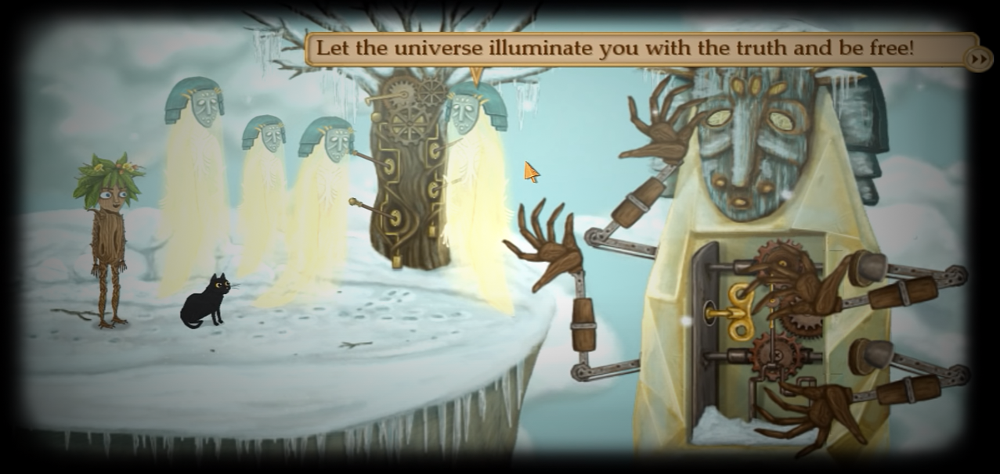
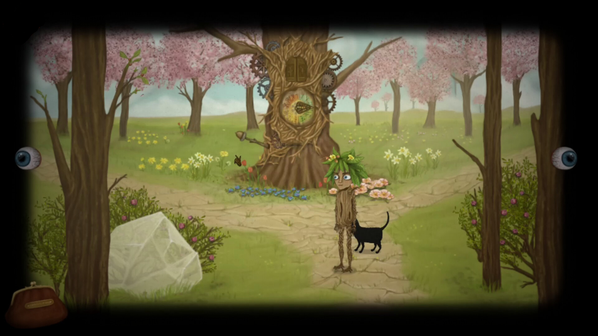
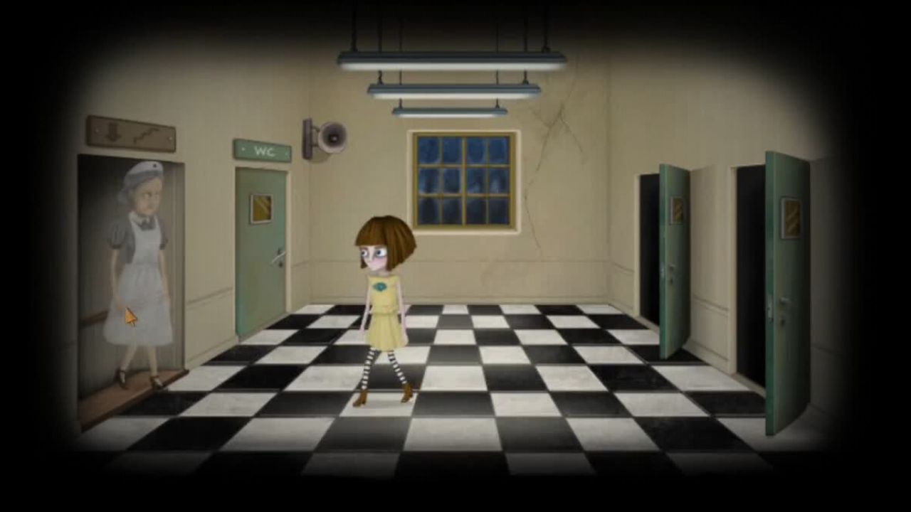
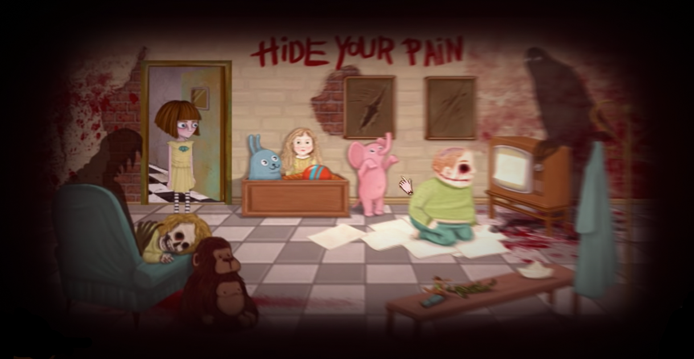
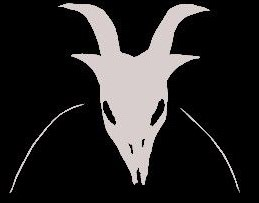

Jogo: Little Misfortune
Desenvolvedor: Killmonday Games AB
Lançamento: 18/set./2019
Catecorias: Terror Psicologico; Boa Trama
My Score: ⭐⭐⭐⭐
Minha música preferida na obra :3
Sobre o Jogo
“Com o seu novo amigo, Sr. Voz, Misfortune vai encontrar muitos infortúnios e embarcar em aventura por uma floresta cheia de mistérios.” Essa é a descrição do jogo como de costume. Esse jogo fala sobre uma garotinha chamada Misfortune que vive em uma casa extremamente traumatizante, em que os pais não dão atenção nem amor a ela, pai extremamente violento e agressivo, além de se envolver com produção de drogas, e a mãe alcoólatra e viciada em cigarros.
Tendo esse cenário em mente, Misfortune um dia escuta uma voz a convidando para jogar um jogo cujo prêmio final seria a felicidade eterna, e ela aceita na hora pensando em compartilhá-la com sua mãe que sempre vivia triste, durante todo o jogo controlamos Misfortune em um mundo de escolhas onde não a certo nem errado, apenas consequências, porém isso afeta os eventos que você vai presenciar durante o jogo então eu recomendo que jogue 2 vezes escolhendo coisas diferentes :3.
Além disso, Misfortune adora jogar glitter nas coisas, faz ela ter uma visão menos triste das diversas situações traumáticas que ela passa, e se você completar todos os glitters, irá desbloquear um final alternativo.
As 5 dimensões
Como havia comentado, Little Misfortune se passa no mesmo universo de Franbow, e nesse universo nós temos as 5 dimensões que regem o universo, porém em Little Misfortune por conta de acontecimentos da Lore, foram criadas realidades bem peculiares que o jogo não aborda de maneira direta, irei explicar novamente aqui as 5 dimensões caso não tenha visto a página de Franbow e após isso apresentarei a realidade criada por Morgo em Little Misfortune.
Obs: Pode conter spoilers.
Dimensão da Luz
A dimensão da luz são onde vivem os Valokas, entidades que são como anjos, criaturas puras, elas são vistas em Franbow e descobrimos que os Kamalas, as sombras que aparecem durante todo o jogo, são uma espécie de versão ruim dos Valokas, em que se em contato com a água podem sofrer certo dano e se tornarem Valokas. Além disso não há muita informação sobre essa dimensão.
Dimensão da Vida
A dimensão da vida se apresenta no jogo quando Franbow acaba indo pra Ithersta, que se encontra na dimensão da vida, nessa realidade tudo remete a vida, os personagens são insetos ou arvores e galhos, até a protagonista vira uma espécie de Franbow versão arvore, lá tudo é verde e cheio de vida com paisagens bonitas e agradáveis.
Dimensão dos Humanos
A dimensão dos humanos é onde vivemos, em que nos encontramos no início do jogo e onde tudo começa, não há muito oque falar sobre esta dimensão.
Dimensão da Morte
Muito próxima da dimensão dos Humanos nos temos a da Morte, nessa realidade habitam os Kamalas, que são seres malignos que se alimentam da depressão e tristeza das pessoas, essa é a primeira dimensão que exploramos durante o jogo, utilizando-a para chegar em lugares ou abrir portas que não temos acesso na nossa dimensão, isso ocorre porque a realidade dos Humanos e a da Morte estão de certa forma interligadas.
Dimensão da Escuridão
Aqui habita a grande mãe Mabuka, uma espécie de ser que governa a escuridão, nesta realidade tudo é ao contrário doque conhecemos, o que é bom é ruim e o que é ruim é bom, quanto mais maligno melhor. Além disso tudo nessa dimensão é extremamente bizarro e maluco e é aqui de onde sai as criaturas mais poderosas como o Remor.
O Além
Essa é uma realidade criada pelo Parasita Morgo, que no final de Little Misfortune descobrimos ser o Sr. Voz, nessa dimensão se passa uma espécie de simulação falha da realidade humana, porém não é uma realidade estável pois ela se encontra entre a dimensão dos Humanos e a da Morte e por conta disso há várias anomalias que ocorrem durante o jogo em que a protagonista transita entre as realidades. Aqui Morgo faz seus jogos com suas vítimas a fim de se alimentar e possivelmente matá-las posteriormente, não se tem 100% de certeza do que realmente acontece.

Minha visão
Achei Little Misfortune um jogo incrível assim como Franbow, até porque eles fazem parte do mesmo universo e é impossível ver vídeos sobre a Lore explicada de Little Misfortune sem citar Franbow, o mundo se expande de uma forma muito criativa e completa.
O jogo em si traz um Plot no final, porém não irei comentar sobre pois disse que não traria spoilers aqui, e não pude explicar muito sobre o Sr. Voz pois também interferiria em como você veria a história durante a gameplay.
Enfim, joguem esta obra prima, excelente história, trilha sonora, arte e desenvolvimento de personagem, além de mexer muito com a noção de realidade assim como Franbow, coisa que eu particularmente amo.